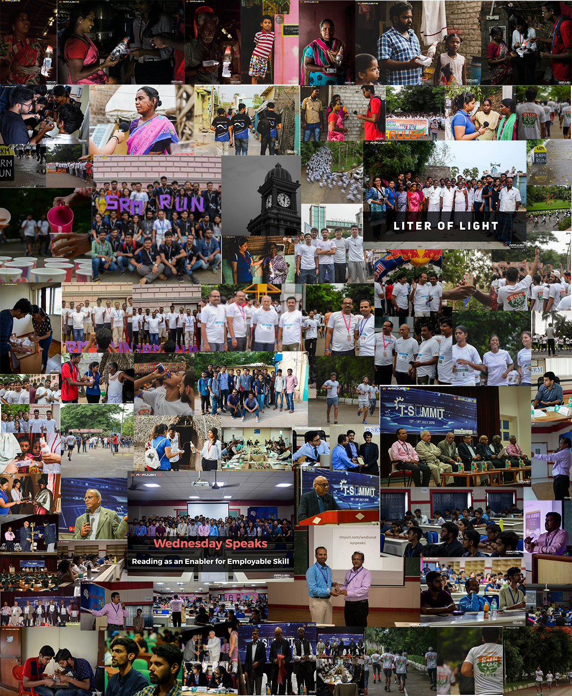

Aaruush Initiatives
Here you can start fixing the small things that you notice around you, it can be anything from that squeaky chair to the dim street lamps.

SCHOOL LEARNING CAMPAIGN
A school is an educational institution designed to provide learning spaces and learning environments for the teaching of students (or "pupils"). By this campaign, an after-school activity is an organized program that youth can participate in outside of the traditional school day.
This campaign would help children and youth to educate so they can live productive lives and help in the progress of society and nation.Need for this type of campaign is to encourage the students towards a practical way of learning and studies made more interesting. Critical and Creative thinking skills are enhanced which would help in responsible actiontaken to better the future and also to improve there are decision-making capabilities. Also, to Enhance the digital literacy and Supporting additional educational needs and inclusion. Moreover,facilitating strategic leadership and management of teaching.It helps the Communities and they are strengthened. Also, State and national learning standards are met for multiple subjects.
Tolerance and understanding are supported. Imagination and enthusiasm are heightened more opportunities for independent and personal learning.It gives the students a platform to ask question,visualize what they are taught and most importantly going to school is no longer boring.
ORGANIC FARMING CAMPAIGN
Organic farming is an alternative agricultural system which originated early in the 20th century in reaction to rapidly changing farming practices.
Organic farming continues to be developed by various organic agriculture organizations today. It is defined by the use of fertilizers of organic origin such as compost manure, green manure, and bone meal and places emphasis on techniques such as crop rotation and companion plant. The need of Organic farming campaign is for Environmental Sustainability and food security. Organic farming extensively relies on nourishing the soil naturally by using compost, natural mineral powders and green manure.Organic Food Industry is Growing Fast and Guarantees High Profitability. This Campaign has various pros which is good for the environment. Organic farming reduces exposure to pesticides and chemicals. This type of practice helps in building healthy soil. Earth is facing a severe problem of global warming and with the practice of organic farming we can control the effects of global warming. In this organic farming campaign our main target is to involve farmers.
The main approach for this campaign will be our farmers living in village because it’s their hard work which can change the revolution of farming. Secondly it approaches to their families because in many places most of the families practice small cultivation in the small land maybe in veranda so we can approach them for practicing organic farming in that place. This little knowledge of the alternative can enlighten many to change the ways and switch to aneco-friendly technique.
LITER OF LIGHT
Edison did change lives of humans with his colossal invention of bulb but we do need reconstruction and renewable so that the boon remains a boon. Pushing up SDG 11 liter of lights is the campaign which sights towards provision of the basic facility of light in small villages. The problem of electricity availability is faces in much larger areas of India and the affordability is another problem. Another muddle one must look into is the way the electricity is generated; it is high time to turn towards clean electricity. Liter of light hence gives the opportunity towards resolving all these.
In this campaign lights are distributed to mobile area where electricity is Unavailable; the lights generate electric current through solar energy that is green energy. The portable light is charged by solar panels, they need to be kept in light to be charged during the day. This campaign offers the villages an improved condition of living using solar technology.
WEDNESDAY SPEAKS
We all might have various diverse interests and are keen about things untouched by our text books.Every interesting fields and topics are discussed and taught by different teachers from SRM every Wednesday on the recurring 'Wednesday Speaks’ Ranging from personality development to scholastic education, different faculties of our institution do their best job in figuring out different ways of teaching us how and why things happen.
It is a platform where every week a lecturer is invited to give a speech on a particular topic. The lecturers are invited from various departments like Medical, Engineering etc. The lecturer explains the topic though a Power Point Presentation. The whole event completes in around two hours. Then an interactive session takes place in which students are allowed to ask questions to quench their curiosity. They take out valuable time out of their schedule to explain us how things work, why things behave in certain manners or how to create these things that they discuss upon.Just because you are of a certain department doesn't prevent you from learning things that are outside your scholastic schedule. Even Sir Gregor Johann Mendel who discovered genetics was an abbot who specialized in mathematics. And SRM completely agrees on this fact, which has presented us with these valuable sessions of what we call the Wednesday Speaks.
And as they say, 'brute force wins you fights while knowledge wins you wars' This strengthens the bonds between the faculty and the student. It most importantly bridges the gap of classroom learning and experiences.
T- Summit
T-summit was started in the year 2016. It was started so that the Tech-Fests that are conducted in various collages all over India can be improvised. In this summit organisers of Tech Fests from various collages like IIT Madras, IIT Mumbai, IIT Calicut etc. come and a healthy discussion takes about how the fests can be conducted in better way and how the technology can be used best to help the society. It is a very nice initiative which will improve the relations between the colleges and new ideas will originate to increase the scale of improvement. There are people who come to judge the event. At the end one college whose idea is best and most innovative wins.
SRM RUN
Running together, with a synced heartbeat, for one cause. Life depends on water, but the reservoir depends on us. With this thought in mind, Team Aaruush presents SRM Run, a 5 km long marathon on the 15th of August 2019, to spread awareness regarding the conservation of water. This Independence day, let's be patriots to mother nature. We hope to see you there, as we get together save water before we run out of it.

SOCIAL MEDIA- YOUR ACTION THEIR EDUCATION
Social media today has become a prominent part of people and mostly the youth. In present digital world, social media has a heavy influence on youth.Youth are connected with the world via social media and world news reaches in seconds after incidents. with the help of live streaming, people get connected and attend any events around the world. This is the reason for our social media campaign.This initiative aims to promote education for all.
A social cause on a social media platform attracts the crowd to promote for the cause. This campaign aims at Sustainable Development Goal 4 which is “Quality Education”. Through this campaign Aaruush provided one educational kit to the underprivileged children. For every four pics, one kit was distributed. This was the chance to give back to the society with the latest technologies that we have built. Aaruush takes step towards change in the society and educating the society is the first step toward change.
LETTER TO SILENT HEROES
Fall seven times and stand up eight that is what our Indian defence forces do. We are obligated for their sacrifices to a normal life and to face all adversities to keep the nation safe. Letter to the silent is one such initiative in which SRM as a whole can send their gratitude to the soldiers and to all the three armed forces. With desk around the campus where all the people of SRM can write a letter to the braves of the nation in any language the mass message could reach the forces and would bring a smile on their faces. This is a little contribution Aaruush makes to show that we are in debt by what is done for us to keep us safe.
© 2019 Team Envision - Aaruush